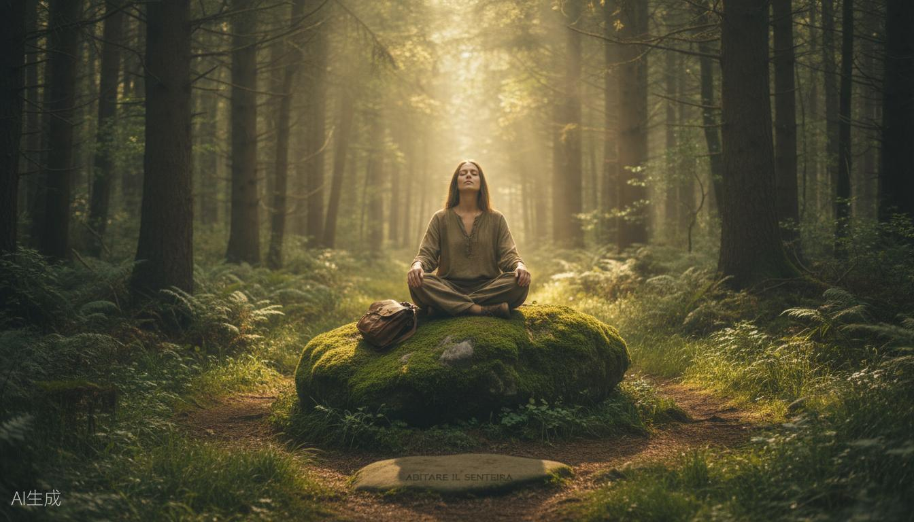

La Mappa del tuo Viaggio
Cartografia interiore in natura
3 ore per disegnare la mappa del tuo percorso. Bussola, curve di livello, sentieri: dal territorio reale a quello dentro di te.
Sai dove stai andando, davvero?
Ogni giorno fai cose. Mail, scadenze, persone. Ma se ti fermi un attimo: dove stai andando, davvero?
La Mappa del tuo Viaggio è un laboratorio di 3 ore in cui usiamo la cartografia — bussola, curve di livello, mappe topografiche — come metafora per disegnare la mappa del tuo percorso.
Dal territorio al territorio interiore
Ti siedi all'aperto con una mappa topografica davanti. Insieme leggiamo il territorio: curve di livello, corsi d'acqua, sentieri. Ogni elemento diventa una metafora.
Le curve di livello sono le salite che hai affrontato. I corsi d'acqua, le cose che ti hanno attraversato. I sentieri, le scelte che hai fatto.
Poi prendi carta e penna e disegni la tua mappa. Non deve essere bella. Deve essere vera.
Alla fine, la bussola. Ogni bussola ha un nord. Qual è il tuo? Dove vuoi andare, davvero?
Cartografia
Leggiamo mappe topografiche reali e le trasformiamo in metafore del percorso.
La bussola interiore
Ogni bussola ha un nord. Qual è il tuo? Definiamo la tua direzione, quella vera.
Disegno della mappa
Disegni la mappa del tuo percorso. Un oggetto concreto da portare a casa.
Per individui e team
Funziona per le persone singole e per i team che vogliono ritrovare una direzione condivisa.
Se ti riconosci in una di queste frasi
Sono in un punto di svolta e non so quale direzione prendere
Voglio capire dove sto andando, davvero
Mi piace pensare per metafore e immagini
Cerco un'esperienza breve ma profonda
Il mio team ha bisogno di ritrovare una direzione condivisa
Cosa non è questa esperienza
Non è team building
Niente giochi costruiti per "creare coesione". C'è un'esperienza condivisa che genera connessione da sé.
Non è coaching
Non ti do risposte. Ti offro strumenti e metafore per trovare le tue.
Non è un corso di orientamento
Mappa e bussola sono metafore, non si tratta di imparare a orientarsi nel bosco.
Quando ci incontriamo
Pomeriggio di aprile
8 posti disponibili
Pomeriggio di maggio
6 posti disponibili
Pomeriggio di maggio
Apertura a breve
Gruppi piccoli, per dare spazio a ciascuno.

Cartografia e metafore

Chi ha disegnato la sua mappa
"La mappa che ho disegnato è appesa sopra la mia scrivania. Mi ricorda dove voglio andare."
Roberta, 38, Bologna
"Disegnare la mappa del mio percorso è stato più utile di mesi di coaching."
Filippo, 33, Firenze
La metafora della bussola ha cambiato tutto. Avevo perso il mio nord.
Laura
36, Roma
Ho portato il mio team. Siamo tornati con una direzione condivisa che non sapevamo di avere.
Marco
45, Milano
Pronto a disegnare la tua mappa?
Scrivimi su WhatsApp o lascia i tuoi dati. Ti rispondo io entro 24 ore.